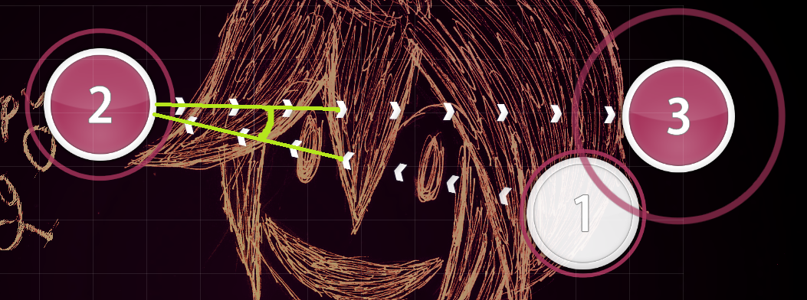
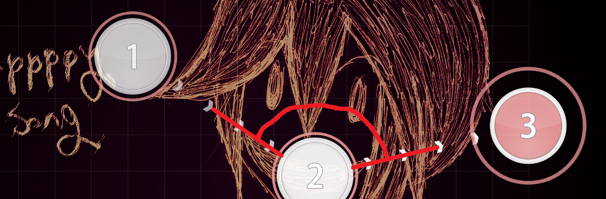

Implied Movement
Firstly, it's important to make objects naturally lead to other objects when trying to make a comfortable map. There are obvious exceptions to this rule when it comes to breaking player expectations or representing a sudden change in music, but generally its good to give players intuitive points to follow. This can be best applied through slider shapes as their bodies usually tell the players where to go next.
Angles
Snapping is the most intuitive way to get from point A to point B in the quickest way possible. It involves moving your cursor in one direction then deccelerate by going the opposite direction. Afterwards, the most comfortable motion will be moving to another object at a sharp angle. This is because as you slow down with the opposing force, continuing in with that force is the easiest way to keep your momentum.
Going at a wide angle at, lets say above 70 degrees, will involve another change in direction which is highly uncomfortable a lot of the time.


That being said, it is still helpful to know when to use wide angles as they are not useless by any means. As time between objects increases or as spacing between objects decreases, the likelihood of players snapping to objects goes down. In these cases, it is okay to use wide angles comfortably and sometimes it may even be better depending on the context. To add to this, wide-angled jumps can make for added difficulty intentionally or they can be used to break comfortable flow when the music changes to fit it.


Circular Flow and Repetition
Moving your cursor in a circular motion (clockwise or counter-clockwise) is one of the simplest ways to make a map intuitive to play. This is because when moving in a certain direction after a while, your hand gets used to the motion and can predict when the next object will be. Although if you really want to make your map comfortable, you have to make sure that you change directions every once in a while as constant rotation in the same direction for too long can lead to problems like mouse drift. Sometimes it can be hard to change the direction of circular
 flow as you are technically breaking intuitive movement but the easiest way to do this is to use linear motion or slowing down/stopping.
flow as you are technically breaking intuitive movement but the easiest way to do this is to use linear motion or slowing down/stopping.
The same concept in circular flow can be applied to simple repitition. Moving your cursor in the same way for a certain period of time allows your hand to get used to the motion thus making it comfortable. Introducing objects that break these flow can be useful to emphasize certain parts in the music.